从零把 Spaceship 购买的新域名（以 hittheroaddudeai.fun / glowupai.tech 为例）接到 Cloudflare Worker：添加站点、清理停放 DNS、修改 NS、绑定自定义域名、开启强制 HTTPS，并完成浏览器端到端验收。
域名绑定分成两段，顺序不能反：先让 Cloudflare 接管域名的 DNS，再把 Worker 绑定到这个域名。 第一段在 Cloudflare 和 Spaceship 两边操作，第二段由部署命令自动完成。NS 没生效之前，绑定自定义域名一定会失败。
整个流程有五个高频卡点：① 进错 Registrations 入口；② 删完停放记录后 DNS 为空无法激活；③ 切 NS 前提前访问或 curl 新域名，导致本机/内网 DNS 把「空 A 记录」负缓存 1 小时（切完后只剩 IPv6，浏览器打开黑屏转圈）；④ 占位 A 记录未删导致 Worker 绑定冲突；⑤ 账号未注册 workers.dev 子域名。 照着下面顺序走可以一次通过。
全部完成后，判断成功的硬标准有三条（缺一不可）： ① dig @223.5.5.5 +short NS <domain> 返回两个 *.ns.cloudflare.com，且 dig +short A <domain> 返回两个 Cloudflare IPv4 地址（不能只有 AAAA）；② curl -I http://<domain> 返回 301 跳 https 且 curl -I https://<domain> 返回 HTTP/2 200；③ 在浏览器真实打开 /sign-in 走完一次 Google 登录跳回 /dashboard 水合完成（不卡转圈）。
完整最短流水线（含并行提速技巧）： Cloudflare Add a site → 删停放记录并加 192.0.2.1 占位记录 → Continue to activation 拿两个 NS → Spaceship 改自定义 NS → 开启 Always Use HTTPS 并删掉 192.0.2.1 → 趁等 NS 生效的 1–5 分钟空窗期，顺手去 Google Cloud 配好 OAuth（先填品牌页 3 个链接且徽标留空，再点发布应用变正式版）并去 GA4 拿到 G- 衡量 ID 写进 site.ts → Cloudflare 变 Active 后一次性跑 npm run build && npx wrangler deploy → 浏览器实测登录验收。
1. 在 Cloudflare 添加站点（不是 Registrations）
最容易走错的入口是左侧「Domains → Registrations」，那是 Cloudflare 卖域名的页面，和 DNS 托管无关。正确入口是 Domains → Overview 右上角的「Add domain / Add a site」，或者直接打开 https://dash.cloudflare.com/<账户ID>/add-site。
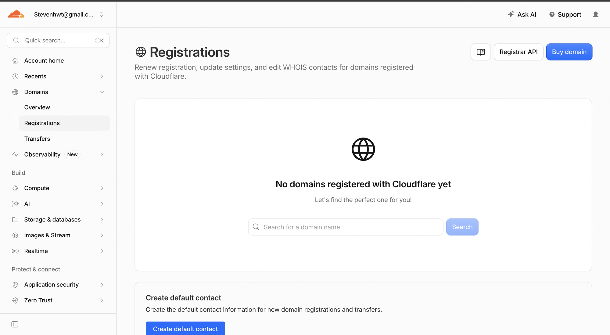
图注：错误入口：Registrations 是买域名的页面，不要在这里操作。
正确做法：打开 https://dash.cloudflare.com/<账户ID>/add-site → 点 Connect a domain → 输入新域名（如 hittheroaddudeai.fun），点 Continue 后选最左侧的 Free ($0) 计划。
1.1 AI 爬虫策略怎么选
输入域名展开 Additional configuration 时会看到 AI training & search policies：Search 必须选 Allow（否则搜索引擎无法收录）；Agent 选 Allow；Training 可选 Block 或保持默认。最上面的「I monetize pages that serve ads」不要勾。
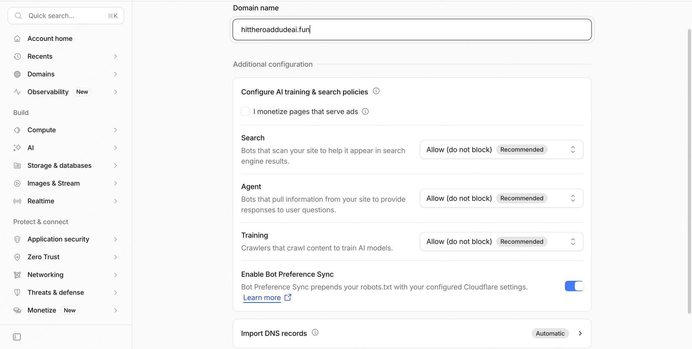
图注：AI 策略：Search 选 Allow；Agent 选 Allow；广告变现选项不勾。
2. 处理 DNS 记录：删掉停放记录，加一条占位记录
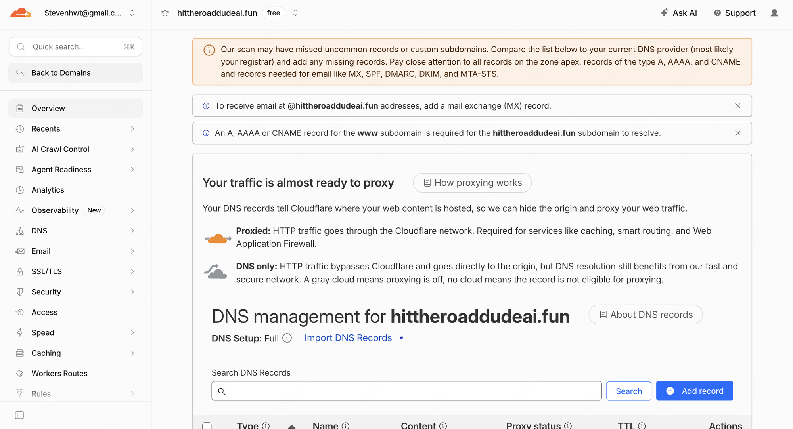
图注：DNS 审核页：顶部的 MX 和 www 提示不用处理；下方列表才是要清理的记录。
Cloudflare 扫描域名时会带出 Spaceship 默认挂的两条停放页 A 记录（指向 AWS IP 54.149.79.189 和 34.216.117.25），必须全部删掉。但删空后 Cloudflare 会拦截激活，所以紧接着要加一条 192.0.2.1 占位记录过审。
2.1 删除 Spaceship 的两条停放 A 记录
逐条点击右侧 Delete 并在弹窗点确认删除。左侧的橙色感叹号也在提示这两条停放记录需要清理。
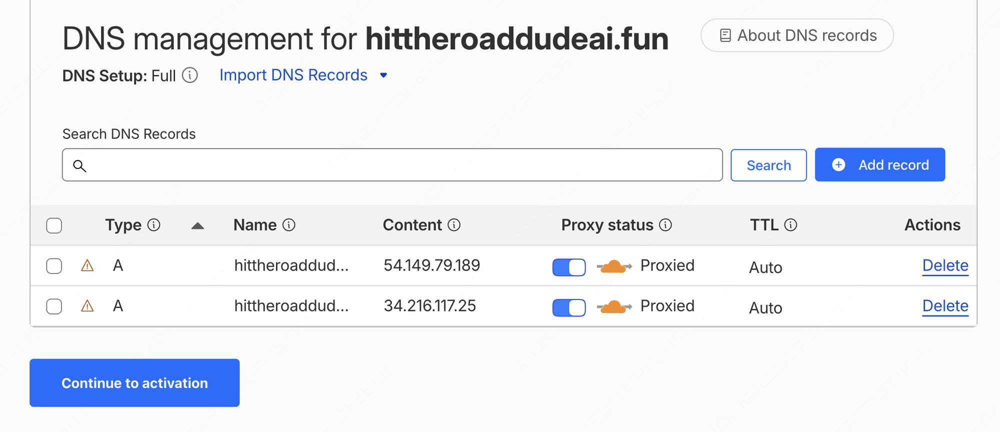
图注：停放记录：两条 A 记录分别指向 54.149.79.189 和 34.216.117.25，逐条 Delete 删除。
2.2 空记录状态是正常的
删完之后列表显示 No DNS records，这是干净的起始状态。
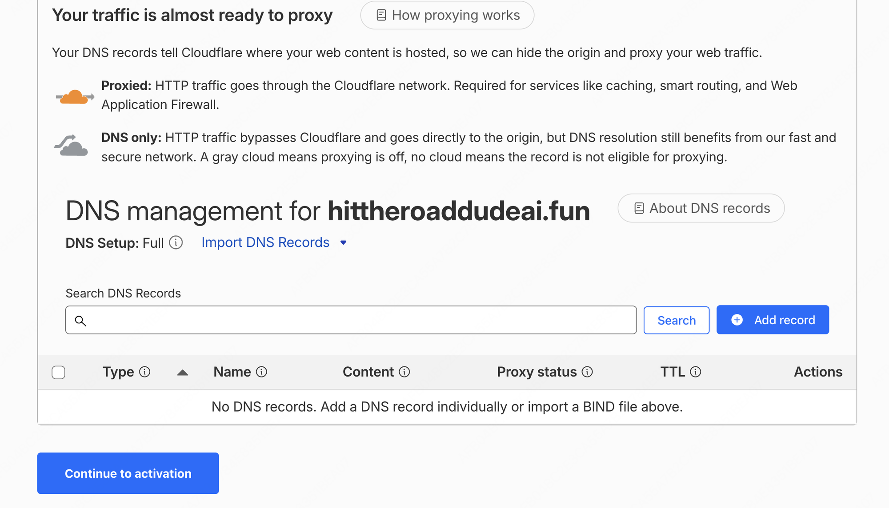
图注：删除后的状态：No DNS records，属于正常现象。
2.3 加一条占位 A 记录才能激活
如果空着记录直接点 Continue，会弹出「Add records later」拦截框。此时点 Cancel 回到列表，点 Add record 添加一条占位记录。
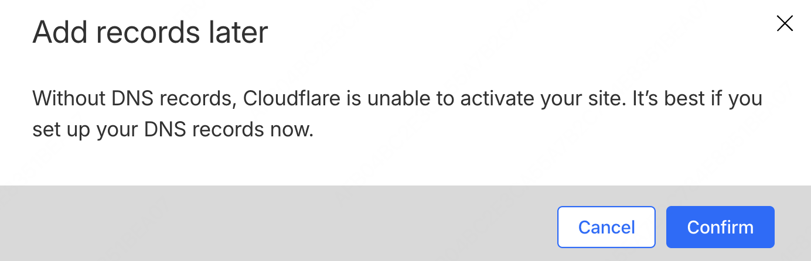
图注：拦截弹窗：没有 DNS 记录无法激活。点 Cancel，回去添加占位记录。
添加一条 A 记录：Name 填 @，IPv4 address 填 192.0.2.1（RFC 5737 保留的文档示例地址，不指向真实服务器），Proxy 保持 Proxied，点 Save。
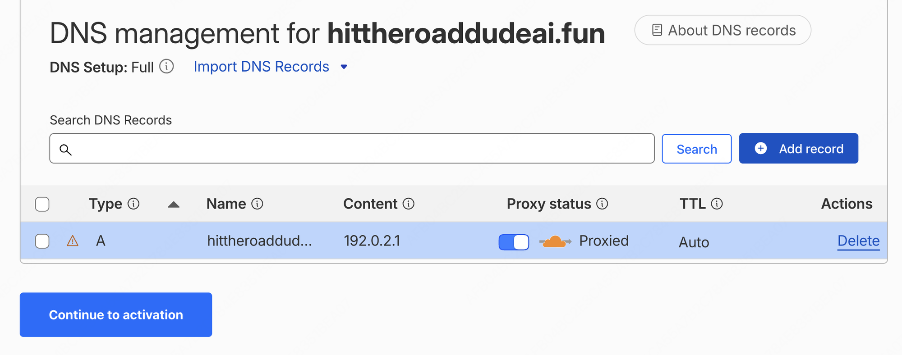
图注：占位记录：A @ 192.0.2.1，Proxied。仅用于通过激活步骤，后面绑定 Worker 前会删掉。
3. 获取 Cloudflare 的 nameserver
点 Continue to activation 后，Cloudflare 会给出分配给你的两个 nameserver（同一账号下通常是 keira.ns.cloudflare.com 和 sri.ns.cloudflare.com），并列出需要替换掉的 launch1.spaceship.net / launch2.spaceship.net。
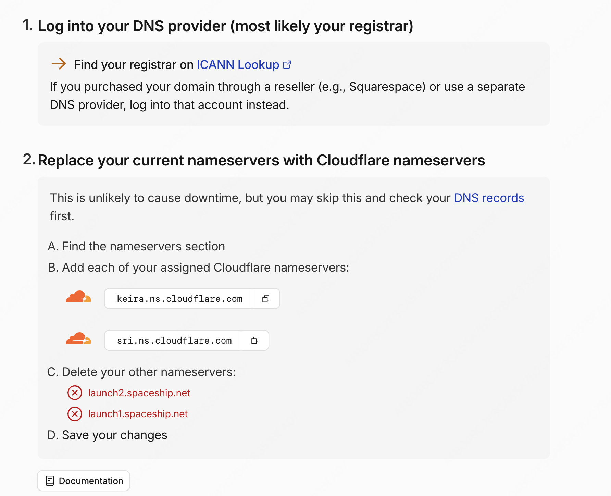
图注：复制分配给你的两个 Cloudflare nameserver（如 keira.ns.cloudflare.com 和 sri.ns.cloudflare.com）。
4. 在 Spaceship 修改 nameserver
打开 Spaceship 域名管理器（https://www.spaceship.com/zh/application/domain-list-application/），点击目标域名 → 右侧面板点「名称服务器和DNS」→ 点「Spaceship名称服务器」旁的「更改」；或者直接一步直达高级 DNS 页：https://www.spaceship.com/zh/application/advanced-dns-application/manage/<你的域名>，在「名称服务器」点「更改」→ 选「自定义名称服务器」。
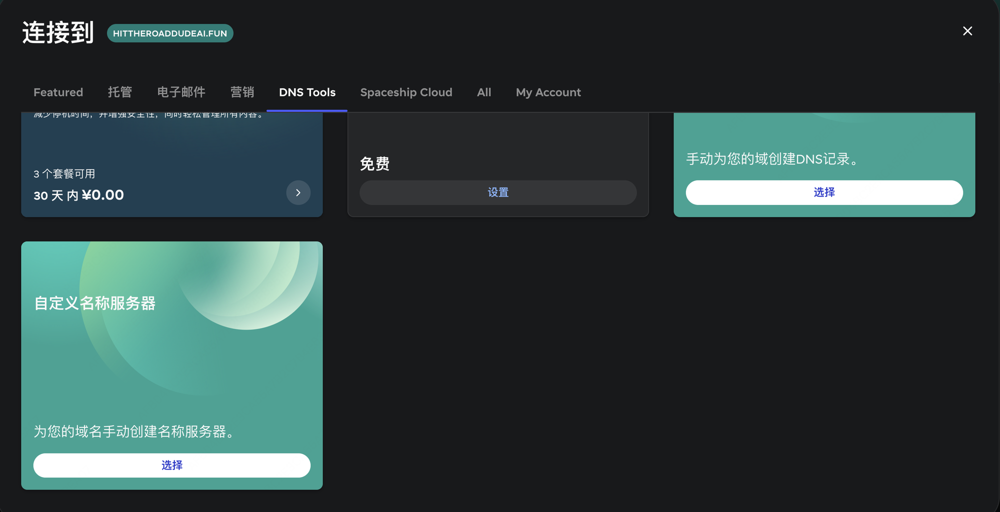
图注：Spaceship：选「自定义名称服务器」，不要选手动创建 DNS 记录。
切换到「自定义名称服务器」后，填入 Cloudflare 给的两个地址（keira.ns.cloudflare.com 和 sri.ns.cloudflare.com），保存设置。
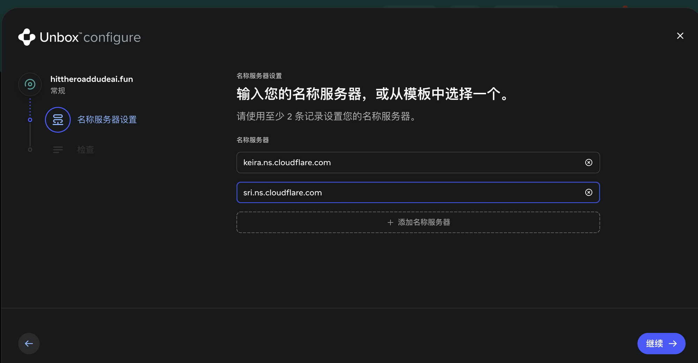
图注：填入两个 Cloudflare nameserver，替换 Spaceship 的默认值。
若走的是 Unbox 向导，点「继续」进入检查页，确认无误后点「完成配置」→「我完成了」关闭向导；最后回到 Cloudflare 点击 I updated my nameservers。
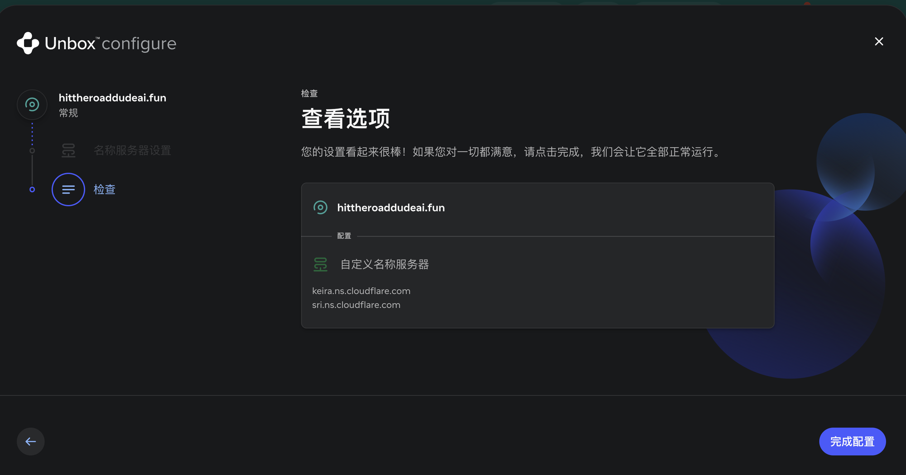
图注：检查页：确认两个 nameserver 都是 Cloudflare 的，点「完成配置」。
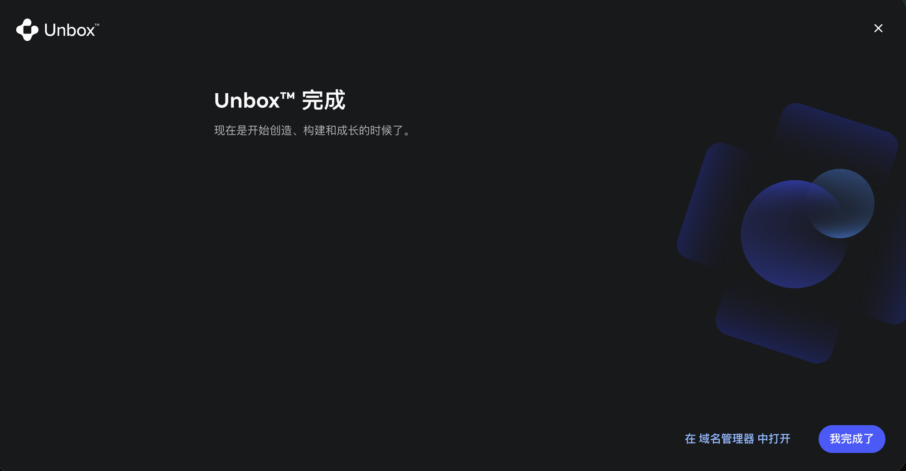
图注：完成页：点「我完成了」；NS 变更已提交给注册局。
5. 等待生效与两个 DNS 缓存大坑
NS 变更在注册局通常 1～5 分钟内生效。关键纪律：在 Cloudflare 状态变成 Active 且 Worker 部署完成之前，绝对不要在浏览器里提前打开或用本机 curl 裸域名！ 否则本机/公司内网递归 DNS 会把切 NS 期间的「0 条 A 记录（SOA 负缓存 3600 秒）」缓存整整 1 小时。
验证 NS 时直接指定公共 DNS（绕过本机/内网 DNS 缓存）：
dig @223.5.5.5 NS hittheroaddudeai.fun +short
dig @1.1.1.1 NS hittheroaddudeai.fun +short同时看 Cloudflare 后台 Domains → Overview：状态从 Pending Nameserver Update 变成 Active 即代表注册局切换完成。
5.1 坑一：Cloudflare 已显示 Active，但本机 dig NS 还是旧值
Cloudflare 的 Domains 页面已经显示 Active，但本机不带 @ 直接跑 dig +short NS 仍返回 launch1.spaceship.net。原因是你本机网络（例如公司内网 DNS 11.11.11.11）缓存了旧 NS 记录。
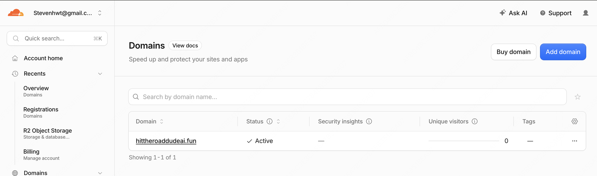
图注：Cloudflare 已经显示 Active，说明注册局的 NS 切换已经完成。
判断准则：Cloudflare 状态 Active + 公共 DNS（@223.5.5.5 / @1.1.1.1）返回 Cloudflare NS = 已生效，可以直接继续部署 Worker。
5.2 坑二：提前访问导致「只有 IPv6、没有 IPv4」，浏览器打开奇慢或卡在转圈黑屏
如果切 NS 前本机已经查过一次该域名，切完并部署 Worker 后你会遇到一个诡异现象：curl -I 看似能通，但浏览器打开网站奇慢，或者在 /sign-in、/dashboard 一直卡在转圈黑屏。运行下面两条命令即可锁定根因：
dig A glowupai.tech
dig +short AAAA glowupai.tech如果 dig A 返回 ANSWER: 0 且 AUTHORITY 还是 SOA launch1.spaceship.net（带几百秒倒计时），而 dig +short AAAA 却返回了两条 2606:4700:... 的 Cloudflare IPv6 地址——说明内网 DNS 缓存了旧的「无 IPv4 记录（负缓存）」，浏览器只能去连 IPv6，而在国内网络直连 Cloudflare IPv6 往往连接超时，导致前端水合 JS 和 /api/me 挂起！
立即解法（二选一）： ① 等 SOA 倒计时（最多几十分钟）自然过期，直到 dig +short A <domain> 正常返回两条 Cloudflare IPv4（如 104.21.x.x、172.67.x.x）；② 在 Chrome 设置 → 隐私设置和安全性 → 安全 → 开启「使用安全 DNS（DoH）」并选 Cloudflare（1.1.1.1），立即绕过内网 DNS 负缓存。
5.3 部署前必须处理的两个 Cloudflare 设置
设置一：删除 192.0.2.1 占位 A 记录（防 Hostname already has externally managed DNS records）
激活站点时添加的占位记录 A @ 192.0.2.1 如果还在，执行 wrangler deploy 绑定自定义域名时会报 Hostname already has externally managed DNS records。处理： 在 Cloudflare 站点进入 DNS → Records，点 192.0.2.1 右侧的 Edit → Delete 删掉它，然后再跑部署。
设置二：首次使用需注册账号级 workers.dev 子域名（防 You need a workers.dev subdomain）
Cron 定时任务和 Queue 消费者要求 Cloudflare 账号注册过一次 workers.dev 子域名（一个账号只需注册一次，后续新站无需重复操作）。入口在左侧 Compute → Workers & Pages。
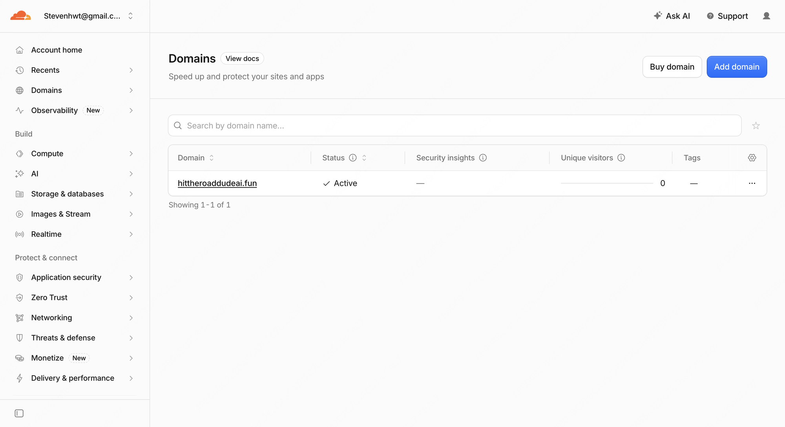
图注：Workers & Pages 在新版左侧的 Compute 分组下，不在 Domains 里。
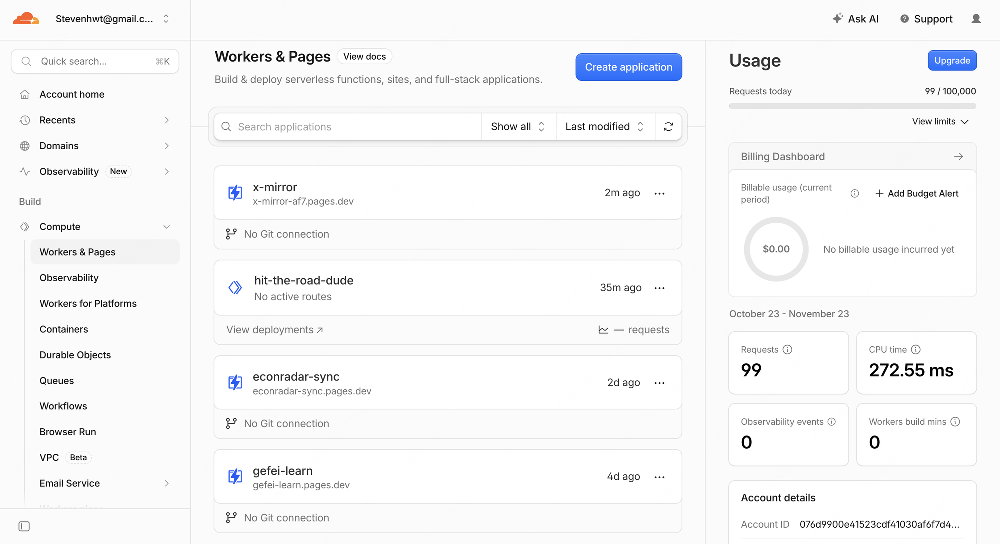
图注：Workers & Pages 列表：Pages 项目的 pages.dev 不能替代 Workers 需要的 workers.dev 子域名。
注册后，Worker 详情 → Domains 标签下 workers.dev 和 Preview URLs 两个开关保持关闭（代码里已设 workers_dev: false），Custom Domains 会在部署后自动挂载。
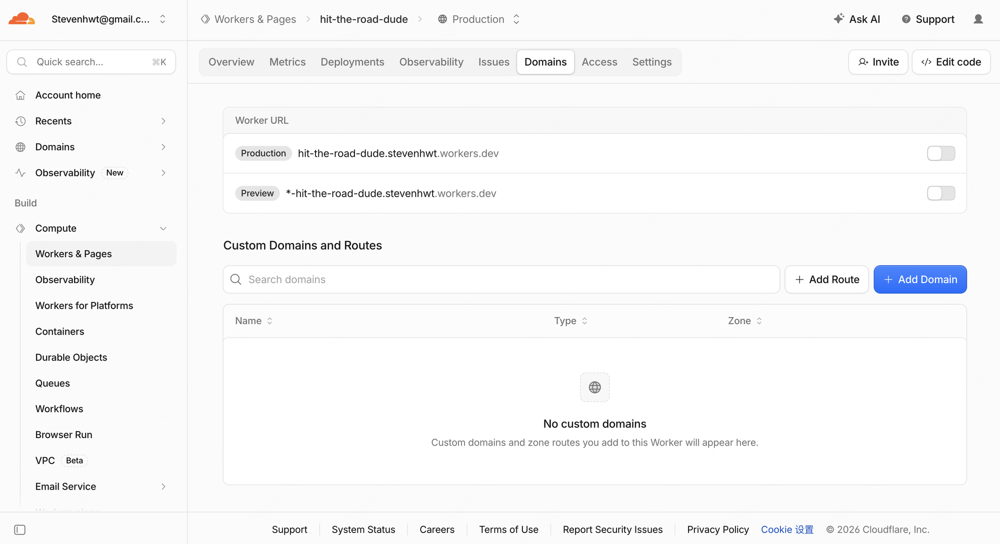
图注：Worker → Domains：Production/Preview 开关保持关闭；Custom Domains 在部署成功后会自动出现。
6. 绑定 Worker 自定义域名并部署
删掉 192.0.2.1 占位记录且站点处于 Active 后，先检查两项上线前置细节：① src/routes/__root.tsx 的 THEME_SCRIPT 首次访问默认回退为 'light'（亮色画布优先），且 public/demo/*.jpg 展示图单张不超过 150 KB（避免大图阻塞首屏水合）；② Google Cloud OAuth 已按「一词一项目」先填齐品牌页 3 个链接（首页、/privacy-policy、/terms-of-service，应用徽标留空免审）并在「目标对象」点击「发布应用」推至正式版（In production）。然后在项目的 wrangler.jsonc 里配置 routes 并关闭 workers_dev 与 preview_urls：
"routes": [
{ "pattern": "hittheroaddudeai.fun", "custom_domain": true }
],
"workers_dev": false,
"preview_urls": false然后构建并部署（若处于公司内网 VPN 导致 dash.cloudflare.com DNS 超时，可在前面加公共 DNS 注入）：
npm run build && npx wrangler deploy部署成功时，终端会输出四类触发器：hittheroaddudeai.fun (custom domain)、schedule: */5 * * * *、Producer for ...-jobs 和两个 Consumer。此时 Cloudflare 已自动为该域名生成 Worker 专属的 IPv4（A）和 IPv6（AAAA）记录并签发边缘证书。
7. 开启 Always Use HTTPS（强制 HTTPS 301 跳转）
Always Use HTTPS 是必开项：访客输入 http://<domain> 时自动 301 跳到 https://<domain>。 没开之前 http 直接返回 200，浏览器会标「不安全」，SEO 审计也会因重复入口扣分。
入口：Cloudflare 选中该域名 → 左侧 SSL/TLS → Edge Certificates → 往下滚动找到 Always Use HTTPS，把开关打开（立即生效，下方 HSTS 保持默认即可）。
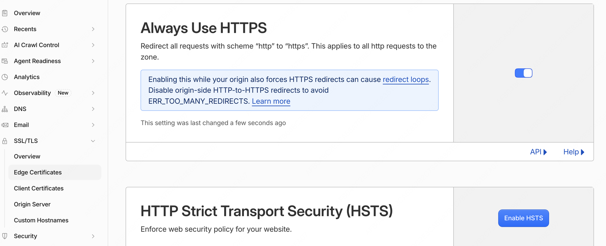
图注：Edge Certificates 页：Always Use HTTPS 打开后，所有 http 请求都会被 301 到 https。
8. 三步终极验收（命令行 + 浏览器真机登录）
光看 curl -I 返回 200 不算上线成功！ 必须按顺序跑完下面三步验收：
# 1. 验证 A 记录必须返回 2 个 Cloudflare IPv4 地址（不能只有 AAAA）
dig +short A hittheroaddudeai.fun
# 2. 验证 HTTP 强制 301 跳 HTTPS，且核心页面全部返回 HTTP/2 200，Google 登录入口返回 302
curl -sI http://hittheroaddudeai.fun | head -5
for p in "" "/zh" "/pricing" "/guides" "/sign-in" "/api/auth/google/start"; do
printf "%s -> " "https://hittheroaddudeai.fun$p"
curl -sI "https://hittheroaddudeai.fun$p" | head -1
done第 3 步（浏览器视觉与水合验收）： 在浏览器打开 https://<domain>/sign-in，确认页面为丝绸白亮色主题、没有一直停留在转圈 <Spinner />，勾选 18+ 条款后点击 Continue with Google，选择 Google 账号并确认同意屏幕，验证能顺利跳回 https://<domain>/dashboard 并显示赠送的初始积分。
9. 常见问题速查表
| 现象 | 原因 | 处理 |
|---|---|---|
| 打开网页奇慢，或 /sign-in、/dashboard 卡在转圈黑屏 | 切 NS 前提前访问过域名，内网 DNS 缓存了 1 小时空 A 记录（只剩 IPv6） | 跑 dig +short A <domain> 核对；开 Chrome 安全 DNS (1.1.1.1) 或等 SOA 倒计时结束 |
| wrangler deploy 报 auth token refresh unreachable | 公司内网 VPN 的 DNS (11.11.11.11) 解析 dash.cloudflare.com 超时或优先走了不通的 IPv6 | 使用公共 DNS 223.5.5.5 + --no-network-family-autoselection 重新执行 deploy |
| dig NS 仍显示 spaceship | 本地解析器缓存旧 NS | 换 dig @223.5.5.5 NS <domain> +short；以 Cloudflare Active 为准 |
| 部署报 Hostname already has externally managed DNS records | 激活站点时加的占位记录 A @ 192.0.2.1 还没删 | 在 Cloudflare → DNS → Records 删除 192.0.2.1 后重新 deploy |
| 无法激活站点（Add records later 弹窗） | 删掉停放记录后 DNS 记录为空 | 点 Cancel，添加一条 A @ 192.0.2.1 占位记录 |
| 部署报 You need a workers.dev subdomain | 账号首次使用 Workers 还没注册默认子域 | 左侧 Compute → Workers & Pages 注册一次子域 |
| http 请求返回 200 而不是 301 | 未开启 Always Use HTTPS | SSL/TLS → Edge Certificates 打开 Always Use HTTPS |
10. 一次性上线检查清单
- Cloudflare 已添加站点（Free 计划），Search 与 Agent 爬虫策略设为 Allow。
- Spaceship 的两条停放 A 记录（54.149.79.189 / 34.216.117.25）已删除，并用
A @ 192.0.2.1占位记录完成激活向导。 - Spaceship 的名称服务器已改为 Cloudflare 分配的两个 NS 地址。
- 已在 SSL/TLS → Edge Certificates 开启 Always Use HTTPS，且已在 DNS → Records 删除
192.0.2.1占位记录。 - Cloudflare 站点状态已变为 Active（期间未提前访问裸域名污染本机 A 记录缓存）。
- 已创建 D1、R2（含生命周期与模板图）、KV、Queues，已同步
SESSION_SECRET与GOOGLE_CLIENT_SECRET。 wrangler.jsonc已配置routes（custom_domain: true）并设workers_dev: false、preview_urls: false，已删除模板遗留的wrangler.staging.jsonc。- 已执行
npm run build && npx wrangler deploy，输出包含<domain> (custom domain)。 dig +short A <domain>返回两个 Cloudflare IPv4 地址，http返回 301，https返回 200。- 已在浏览器实测打开
/sign-in完成一次 Google 登录并正常渲染/dashboard。